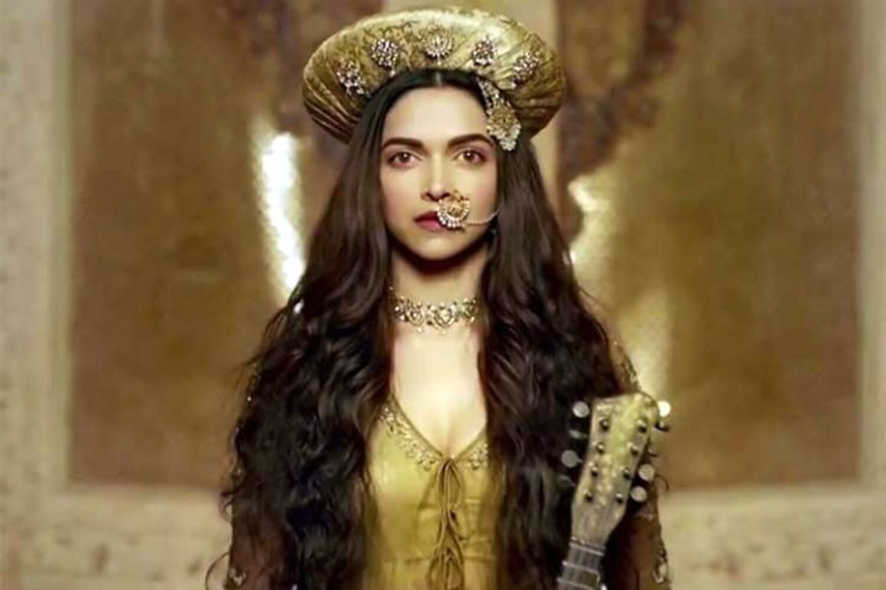
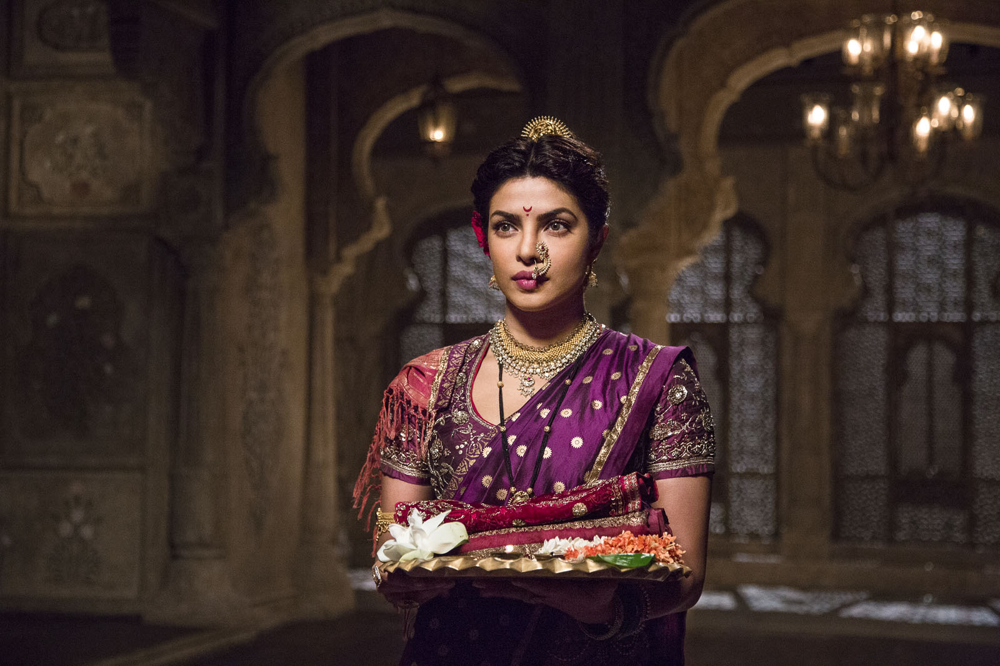
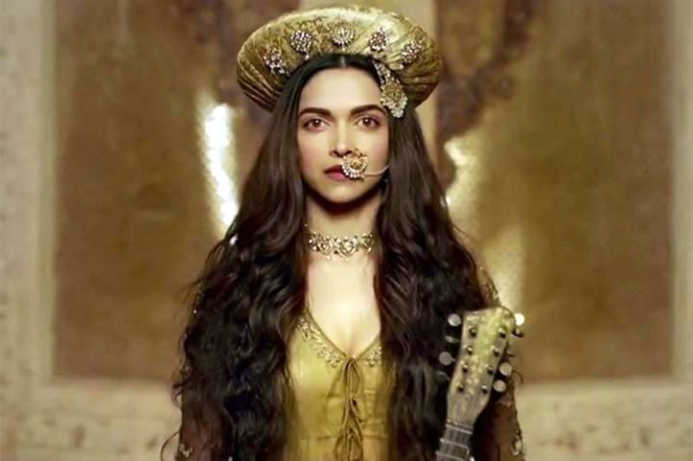
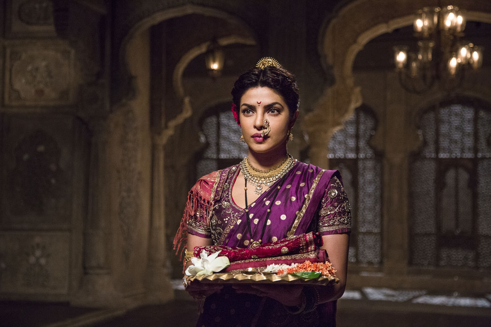

Starring:Ranveer Singh
Deepika Padukon
Priyanka Chopra
Bajirao Mastani is a 2015 Indian Hindi-language epic historical romance film directed by Sanjay Leela Bhansali, who co-produced it with Eros International and composed its soundtrack. The film stars Ranveer Singh, Deepika Padukone and Priyanka Chopra with Tanvi Azmi, Vaibhav Tatwawaadi, Milind Soman, Mahesh Manjrekar and Aditya Pancholi in supporting roles. Based on Nagnath S. Inamdar's Marathi novel Rau, Bajirao Mastani narrates the story of the Maratha Peshwa Bajirao I (1700–1740) and his second wife, Mastani.
Conceived as early as the 1990s, Bhansali announced the film in 2003 but production was delayed several times due to its changing cast. A passion project for Bhansali, Bajirao Mastani spent over a decade in development hell before being revived in 2014. Extensive research was done before moving into pre-production, which required the creation of twenty-two highly detailed sets, and numerous costumes and props to strengthen its opulence and high production value. Principal photography took place on sets constructed in Film City, with some portions being filmed on location. Visual effects and CGI were used in post-production to enhance a number of scenes.
Bajirao Mastani was released on 18 December 2015 and was praised for Bhansali's direction, various technical achievements, and the performances of the cast. The film has also been noted for its scale, grandeur and attention to detail. Recipient of several accolades, Bajirao Mastani won 7 National Film Awards, including Best Direction (Bhansali) and Best Supporting Actress (Azmi). The film received a leading 14 nominations at the 61st Filmfare Awards, including Best Actress (Padukone) and Best Supporting Actress (Azmi), and won a leading 9 awards, including Best Film, Best Director (Bhansali), Best Actor (Singh) and Best Supporting Actress (Chopra). At the Zee Cine Awards, Singh won Best Actor – Male (Critics) and Padukone won Best Actor – Female.
The film was also very successful at the box office, grossing over ₹356.2 crore against the budget of ₹145 crore, thus becoming the 4th highest grossing Hindi film of 2015.
 ">>
">>
👑Peshwa Bajirao👑
👸Mastani👸
👸Kashibai👸